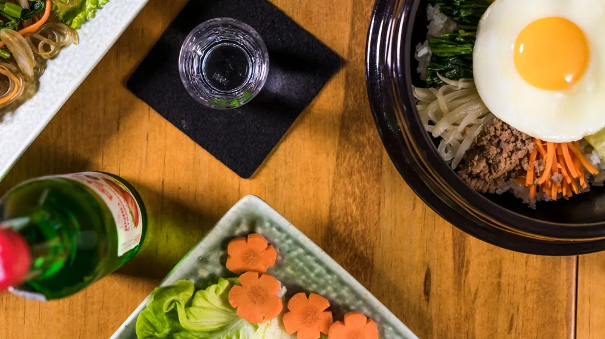

가양주 안주, 실패 없이 고르는 5가지 비법: 당신의 술맛을 200% 살리는 궁합
사진: 준섭 윤 / Pexels (무료 이미지, 출처 표기)
가양주 안주 페어링, 왜 중요할까요?

가양주를 직접 빚었거나 특별한 전통주를 구했을 때, 어떤 안주를 곁들여야 할지 고민되시나요? 가양주는 시판되는 술보다 훨씬 다채로운 맛과 향을 지니고 있습니다. 이때 안주를 잘못 선택하면 술 본연의 섬세한 풍미를 해칠 수 있습니다.
반대로 잘 어울리는 안주는 가양주의 숨겨진 매력을 끌어내고, 술맛을 한층 풍부하게 만듭니다. 이 글에서는 2026년 8월 기준으로 가양주 종류별 최적의 안주 페어링 조합과 실패 없이 안주를 고르는 실용적인 원칙을 알려드립니다.
나에게 맞는 가양주 스타일은?
가장 먼저 내가 마실 가양주의 특징을 파악하는 것이 중요합니다. 가양주는 크게 맑은 청주 계열과 탁한 탁주 계열로 나뉘며, 단맛, 신맛, 감칠맛, 도수 등에 따라 그 특징이 천차만별입니다. 아래 표를 참고하여 자신의 가양주가 어떤 스타일인지 확인해 보세요.
가양주 종류별 찰떡 안주 궁합
가양주의 스타일에 따라 추천하는 안주를 구체적으로 살펴보겠습니다. 단순히 '맛있다'는 것을 넘어, 서로의 풍미를 극대화하는 조합을 찾아보세요.
- 맑은 청주 계열: 찹쌀이나 맵쌀로 빚어 맑게 거른 청주는 재료 본연의 향을 섬세하게 담아냅니다. 두부 부침, 문어 숙회, 백김치, 조개술찜 등 담백하고 심심한 안주와 잘 어울려 술의 향을 온전히 느낄 수 있습니다.
- 걸쭉한 탁주 계열: 막걸리처럼 탁한 가양주는 대체로 구수한 맛과 탄산감이 특징입니다. 파전, 김치전, 해물파전 같은 전 종류는 물론, 보쌈, 닭볶음탕, 돼지두루치기 등 기름지거나 매콤한 음식과 환상의 궁합을 자랑합니다. 탁주의 묵직함이 음식의 강한 맛을 부드럽게 감싸줍니다.
- 과실/약재 가양주: 오미자, 복분자, 송순 등으로 빚은 술은 특유의 향과 색을 가집니다. 신선한 과일, 견과류, 치즈 플래터, 간단한 샐러드 등 가볍고 산뜻한 안주를 추천합니다. 약재주는 삼계탕이나 보양식과도 좋은 조화를 이룹니다.
- 증류식 소주 계열: 고도수의 증류주는 차갑게 마시거나 상온에서 스트레이트로 즐깁니다. 기름진 육포, 소고기 타다끼, 어란, 숙성회 등 고급스럽고 진한 풍미의 안주가 잘 어울립니다. 술의 강렬함에 뒤지지 않으면서도 서로의 맛을 돋워주는 조합입니다.
실패 없는 가양주 안주 페어링 3가지 원칙
어떤 가양주에도 적용할 수 있는 보편적인 안주 페어링 원칙을 기억하면 언제든 만족스러운 조합을 찾을 수 있습니다.
- 맛의 '조화'를 추구하세요: 술과 안주의 맛이 서로를 압도하지 않고 균형을 이루는 것이 중요합니다. 예를 들어, 순하고 부드러운 가양주에는 담백한 안주를, 진하고 묵직한 가양주에는 풍미가 강한 안주를 선택하여 조화로움을 만듭니다.
- 맛의 '대비'를 활용하세요: 때로는 반대되는 맛이 의외의 조화를 만들어내기도 합니다. 탁주의 신맛과 탄산감은 기름진 전의 느끼함을 잡아주고, 단맛이 강한 가양주에 짭짤한 안주를 곁들이면 단짠의 매력을 느낄 수 있습니다.
- 재료의 '유사성'을 고려하세요: 같은 재료에서 나온 술과 안주는 안정적인 궁합을 보여줍니다. 쌀로 빚은 가양주에는 쌀을 활용한 요리(전, 떡갈비 등)가 잘 어울립니다. 혹은 같은 지역 특산물로 만든 술과 안주를 함께 즐기는 것도 좋은 방법입니다.
초보자를 위한 가양주 안주 선택 팁 및 주의사항
가양주 안주 페어링이 어렵게 느껴지는 초보자들을 위한 몇 가지 실용적인 팁과 주의사항을 알려드립니다.
- 처음엔 '국민 안주'부터 시작하세요: 가장 실패할 확률이 낮은 안주는 바로 막걸리에 흔히 곁들이는 파전, 두부김치, 보쌈 등입니다. 이들은 대부분의 가양주와 무난하게 잘 어울리며, 특히 탁주 계열과 좋은 궁합을 보여줍니다.
- 너무 강한 향신료는 피하세요: 강한 향신료나 자극적인 소스를 사용한 안주는 가양주 본연의 섬세한 향과 맛을 가릴 수 있습니다. 가급적 재료 본연의 맛을 살린 담백한 요리를 선택하는 것이 좋습니다.
- 온도도 중요합니다: 가양주는 종류에 따라 차갑게, 혹은 상온에서 마실 때 제맛을 냅니다. 안주 역시 술의 온도와 비슷한 온도의 음식을 곁들이면 더욱 좋습니다. 시원한 청주에는 차가운 해산물, 따뜻한 탁주에는 갓 부쳐낸 전을 추천합니다.
- 개인의 취향을 존중하세요: 위에서 언급된 모든 페어링은 참고 사항일 뿐, 가장 중요한 것은 자신의 입맛입니다. 여러 조합을 시도해 보면서 자신만의 '인생 안주'를 찾아가는 과정도 가양주를 즐기는 큰 기쁨이 될 것입니다.
🔗 이 글도 함께 보면 좋아요: 에어프라이어 완벽 활용 가이드: 초보자도 실패 없는 핵심 비법 5가지
관련 추천 상품
가양주 키트, 전통주 선물세트, 막걸리 안주 추천 관련 인기 상품 보러가기
이 포스팅은 쿠팡 파트너스 활동의 일환으로, 이에 따른 일정액의 수수료를 제공받습니다.
한눈에 보는 상품 목록
맑은 청주
찹쌀을 주재료로 빚어 맑고 깨끗한 맛이 특징인 술.
걸쭉한 탁주
쌀을 주재료로 하여 탁한 형태로 마시는 대중적인 술.
과실 가양주
과일 발효를 통해 달콤한 향과 맛을 더한 이색적인 술.
증류식 소주
고도수로 빚어져 강렬한 향과 깔끔한 여운이 특징인 술.